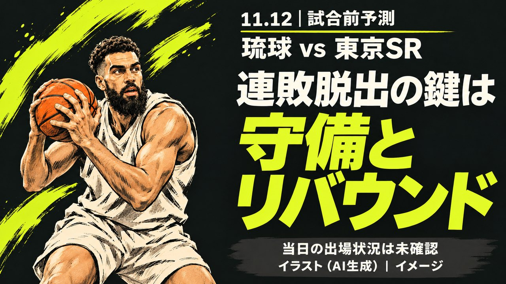

琉球ゴールデンキングス対東京SRの試合前予測、3連敗のキングスは攻撃力をどう止めるか

11月12日19時35分から、琉球ゴールデンキングスと東京サンロッカーズが対戦します。会場は沖縄サントリーアリーナです。
この記事では、両チームの成績と直近の試合を比べます。そのうえで試合を予測します。
12時に更新：茨城戦のターンオーバー16個と、クーリー選手の発言を追記しました。
【事実】琉球は7勝8敗、東京SRは11勝5敗
琉球ゴールデンキングスは通算7勝8敗で、B.PREMIER西地区の6位です。総得点は1254、総失点は1228です。
東京サンロッカーズは通算11勝5敗で、東地区の4位です。総得点は1451、総失点は1284です。
琉球は直近3試合で負けています。
11月1日は三遠に86-96、11月7日は宇都宮に76-79でした。11月9日は茨城に72-80で敗れています。
東京SRは11月1日に仙台へ79-87で敗れました。その後は11月7日に京都へ92-87、11月10日に神戸へ108-87で勝っています。
【分析】1試合あたりの得失点差は約8.7点の開き
総得点と総失点から平均を出すと、琉球は得点が約83.6で失点が約81.9です。得失点差は約プラス1.7点です。
東京SRは得点が約90.7で失点が約80.3です。得失点差は約プラス10.4点になります。
失点はほぼ同じで、差を生んでいるのは得点です。東京SRの攻撃力が、この試合の最大の材料です。
【分析】琉球の得点は3試合で86、76、72と下がっている
琉球の直近3試合の得点は86点から76点、72点へ減りました。シーズン平均の約83.6を、最後の2試合は下回りました。
東京SRは神戸戦で108点を取り、勢いに乗っています。琉球が得点で追う展開になると、苦しくなります。
琉球の条件は、序盤から速い展開に持ち込むことです。それが得点の落ち込みを止める道です。
【事実】茨城戦の敗因はターンオーバー16個
琉球は11月9日の茨城戦で、ターンオーバーを16個犯しました。そこから19失点しています。
アンソニー・マクヘンリーアソシエイトヘッドコーチは、疲労と落ち着きのなさが影響したと話しました。東アジアスーパーリーグを含めると4連敗です。
ジャック・クーリー選手は「キングスは言い訳をする組織ではない」と語っています。今季は平均13.7得点、11.1リバウンドです。
【分析】ミスの多さが、東京SRの速攻を呼ぶ
東京SRは平均得点が約90.7で、リバウンドもリーグ上位です。琉球がボールを失うと、得点を伸ばす場面が増えます。
今季の琉球は、クーリー選手中心の形から速い展開へ変えています。その分、ターンオーバーを減らせるかが勝負を分けます。
【事実】琉球はジェレット選手がIL、東京SRは登録なし
琉球のグラント・ジェレット選手は、インジュアリーリストに載っています。公示事由は右下肢静脈血栓症で、9月9日の登録です。
東京サンロッカーズで現在リストに載っている選手はいません。
琉球はこの試合で首里城復興2026の対象試合として、特別デザインのユニフォームを着ます。
【予測】東京SRがやや有利、琉球の鍵はホームの強度
予測は、東京SRがやや有利です。得失点差の開きと、琉球の3連敗が理由です。
琉球が勝つには、守備の強度を上げることです。リバウンドで相手に2度目の機会を与えない形が理想です。
クラブも東京SRのリバウンドの強さを警戒点に挙げています。
不確かな点は3つあります。1つ目は、東京SRが神戸戦から中1日で沖縄へ移動する点です。
2つ目は、琉球が連敗から立て直せるかです。3つ目は、両チームの当日の出場状況が未確認である点です。